Черепашка, что они с тобой сделали,,,
Да, это опять эксель, но относительно легкое задание, если делать внимательно.
Пример 1)
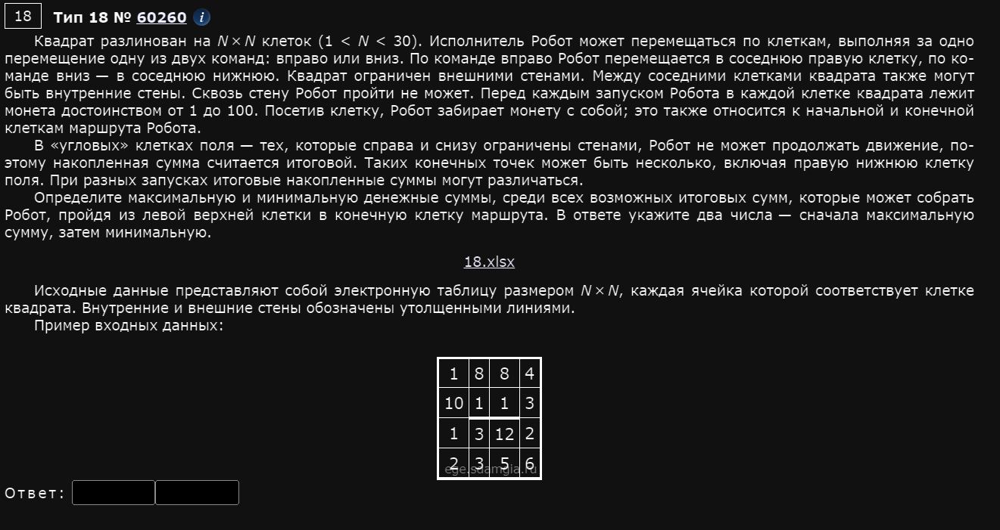
Отрываем файлик, видим следующее:
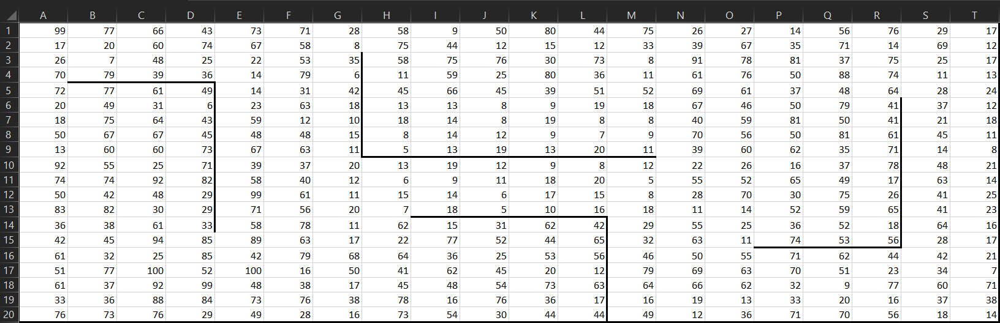
Начнем-с. Будем работать с 2 таблицами одновременно (одна изначальная), вторая “рабочая”.
Копируем таблицу и любым образом ставим внешние стенки ячейкам чисто для удобства (либо через верхнюю панель, либо через формат ячеек) и удаляем содержимое.
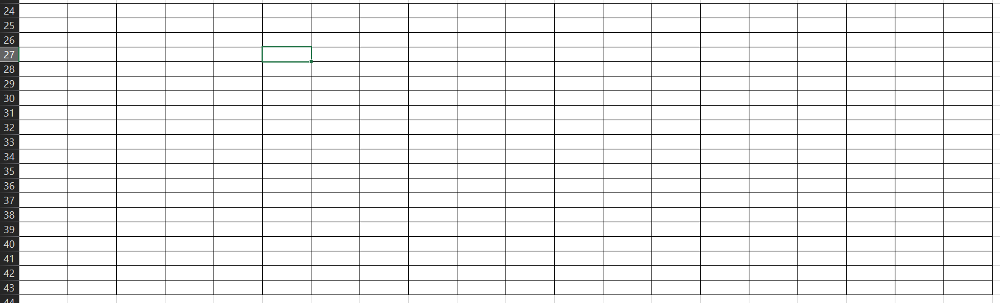
Нам нужно начать заполнение рабочей таблицы слева сверху. Пишем ексельчику следующее где-нить на 2-3 ячейки пониже основной таблицы (также на левом верхнем месте рабочей таблицы):
=А1
В ячейки справа от левой верхней мы не можем попасть никак, кроме как прийти слева (т.е. командами направо онли). Поэтому заполняем их следующим образом:
=A24+B1 и растягиваем вправо до конца
Точно также с ячейками ниже левой верхней. Туда можно попасть только командой вниз. В них пишем следующее:
=A24+A2 и растягиваем вниз до конца
По итогу:
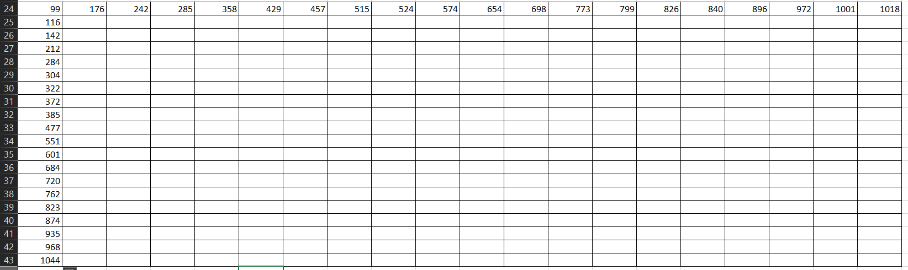
Теперь делаем собсна то, что просят по задаче: робот может ходить либо вниз, либо вправо. Поэтому в ячейке справа по диагонали от левой верхней пишем следующее:
=МАКС(A25;B24)+B2
Ну т.е. мы говорим роботу: где больше монет - там и иди. Растягиваем эту формулу на всю оставшуюся таблицу. Имеем:
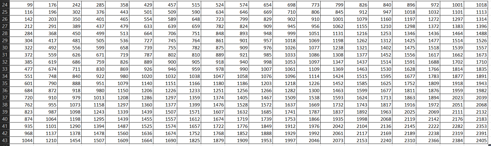
Получалась таблица значений всевозможных (максимальных) сумм из всех путей. Но рано писать ответ, мы еще не учли стены.
Чтобы это сделать, копируем наши основную таблицу и нажимаем на верхней панели “вставка, только форматирование”. Причем можно просто скопировать, а вставлять “руками” необязательно, ведь вставка и так вставляет элемент за вас. получаем следующее:
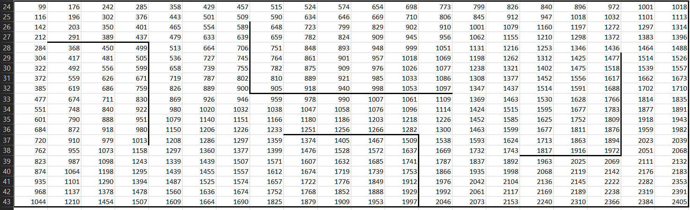
Как учесть стены? Давайте отмечу ячейки, в которые робот не может попасть никак, кроме как выполняя команды только вправо или только вниз:
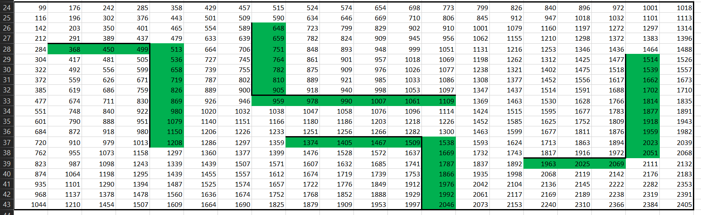
Вот в этих ячейках нам придется переписать нашу команду ибо робот не умеет ходить сквозь стены. Если более наглядно: команда МАКС в каждой ячейке берет переменные слева и сверху от себя, а в некоторых местах стоит стена и команда МАКС так делать не должна (т.е. должна брать лишь 1 составляющую, либо сверху, либо слева).
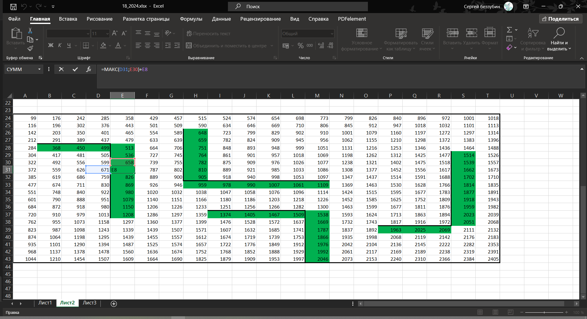
Т.е. вместо команды МАКС в зеленых ячейках мы должны указать просто предыдущую возможную сумму либо слева либо сверху. В частности в синих ячейках указываем мол пусть берет сумму предыдущую только сверху, а в оранжевых - только слева.
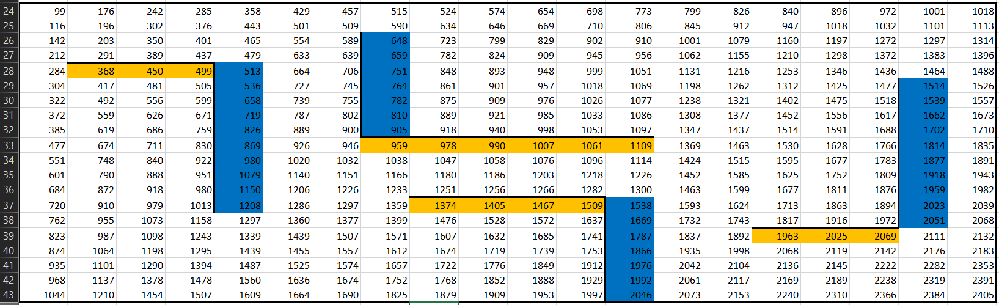
После заполнения таких команд стены могут стираться. Это нормально и связано с тем, что эксель копирует ячейки полностью, вместе с форматированием. Чтобы этого избежать он сам вам предложит в параметрах автозаполнения “заполнить только значения”.
После проделанных действий имеем:
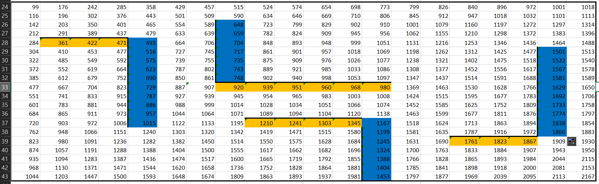
А теперь вспоминаем условие:
В “угловых” клетках поля - тех, которые справа и снизу ограничены стенами, Робот не может продолжать движение, потому накопленная сумма считается итоговой. Таких конечных точек может быть несколько, включая правую нижнюю клетку поля. При разных запусках итоговые накопленные суммы могут различаться.
Для нас это означает, что везде, где робот ограничен стенами справа и снизу НаСтАл ЕгО ЧеРеД давать итоговую сумму. Это вот эти клеточки:
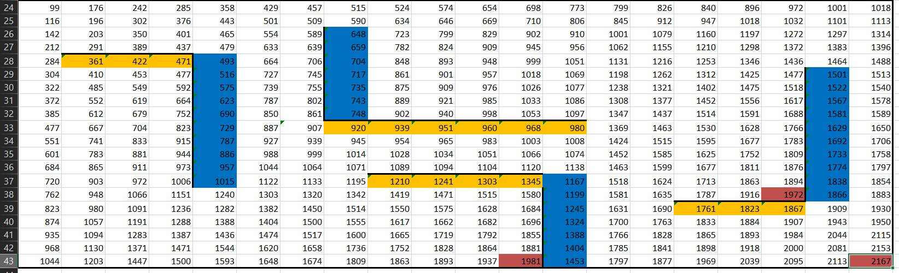
В красных клеточках возможные значения его итоговой суммы. По условию, она должна быть максимальной, поэтому смело руками справа от таблицы пишем первый из двух ответов - 2167.
Далее надо найти минимальную сумму. Тут все тупее не придумаешь. Вместо команды МАКС в каждой клеточке рабочей таблицы надо написать МИН. Как это сделать, не переписывая каждую из команд? Тыкаем ctrl + H, откроется меню замен:
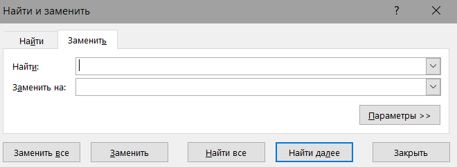
В “Найти” вбиваем “макс”, а в заменить вбиваем “мин” и тыкаем заменить все. Имеем:
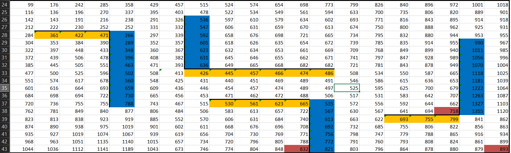
Минимальная сумма среди красных ячеек - 718. Это и есть второй ответ.
Ответ: 2167 и 718.
Пример 2)
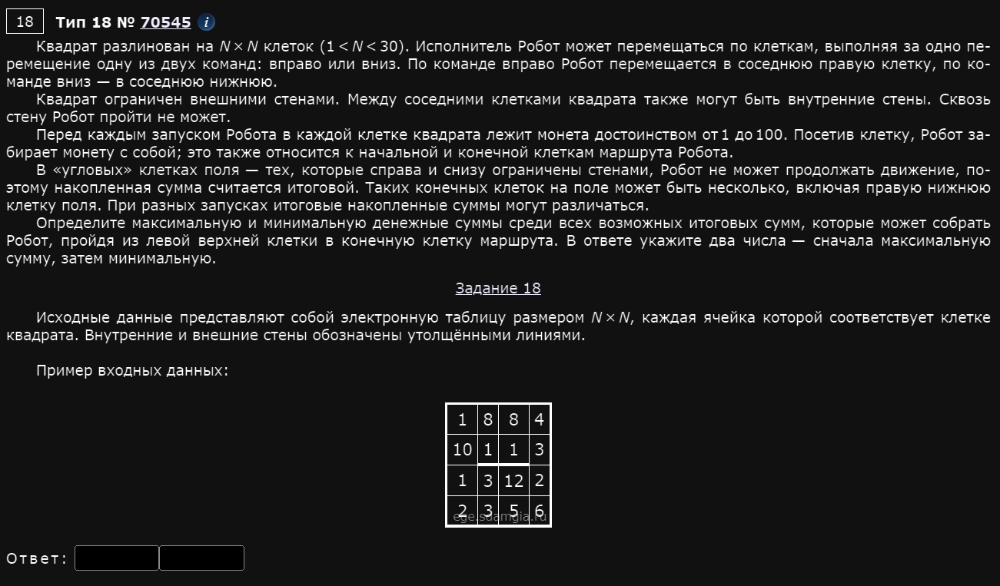
Открываем, видим вот это:
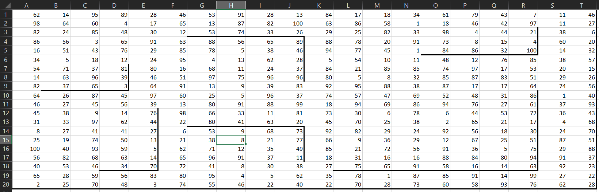
В целом, задание мало чем отличается из года в год, просто разные таблицы и разные стенки.
Шаг 1)
Копируем таблицу, ставим разграничения между ячейками, очищаем содержимое
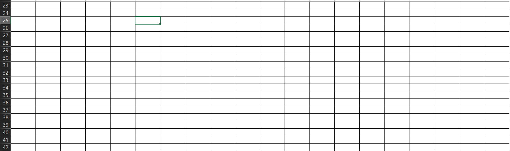
Шаг 2)
В левой верхней ячейке рабочей таблицы пишем то же значение, которое есть в левой верхней ячейке основной таблицы: 62.
Шаг 3)
Справа от левой верхней ячейки, где написано 62 пишем “=A23+B1” и растягиваем вправо до конца, а снизу пишем “=A23+A2”. Имеем:
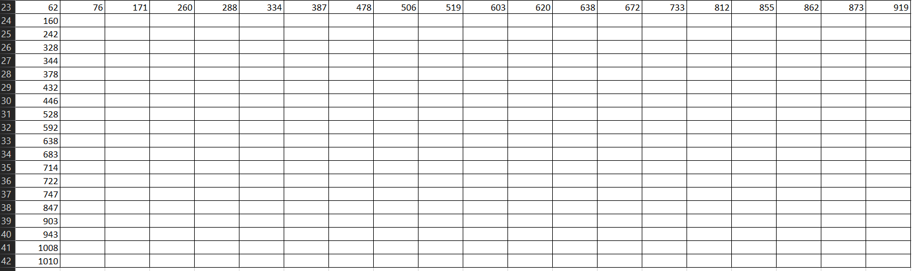
Шаг 4)
Пишем в ячейке справа и снизу от 62 следующее: “=B2+МАКС(A24;B23)” и растягиваем это на вс. оставшуюся таблицу. Имеем:
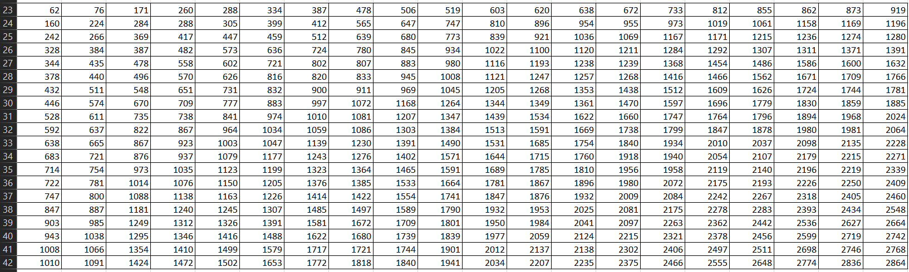
Шаг 5)
Ставим стенки основной таблицы на рабочую. Для этого копируем основную таблицу, нажимаем вставка -> форматирование. Имеем:
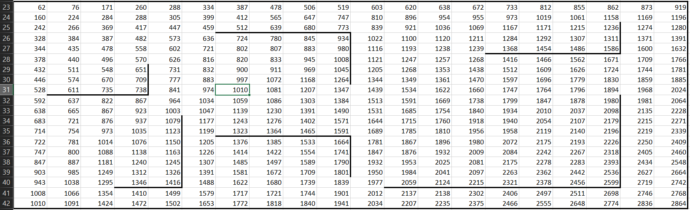
Шаг 6)
В выделенных синим клеточках нам нужно переписать формулу так, чтобы считывалась только сумма сверху (поскольку робот может идти только вниз), а в выделенных оранжевым - только слева (поскольку робот может идти только вправо). Вот в этих вот:
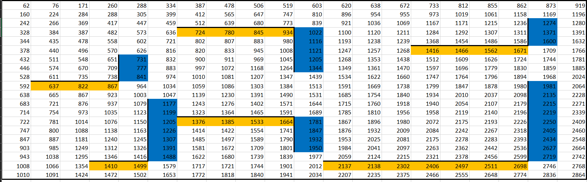
Имеем:
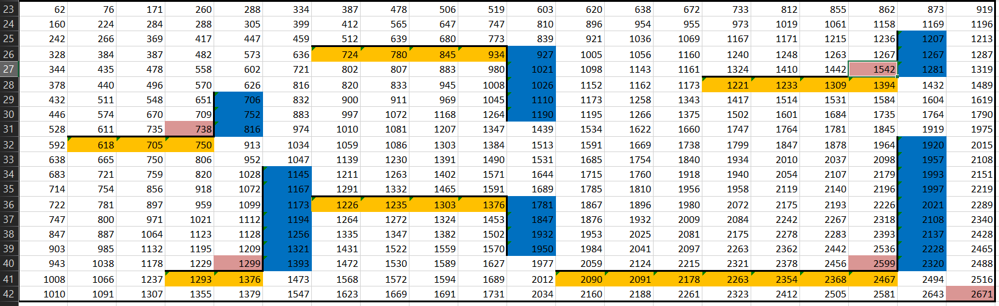
В розовых ячейках - конечные точки маршрута робота. Максимальная среди них - 2671, это первый ответ.
Шаг 7)
Поменять команды МАКС на команду МИН с помощью автозамены ctrl + H. Имеем:
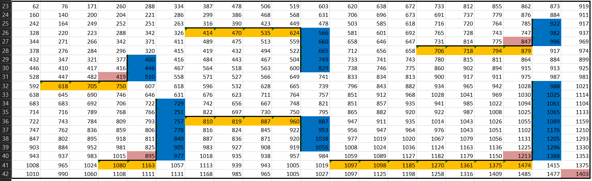
Минимальное из красных теперь - 419. Это второй ответ.
Ответ: 2671 и 419.
Стоит отметить, что раньше, до 2024 года, формулировка задания была немного другой. Давайте рассмотрим такой пример.
Пример 3)
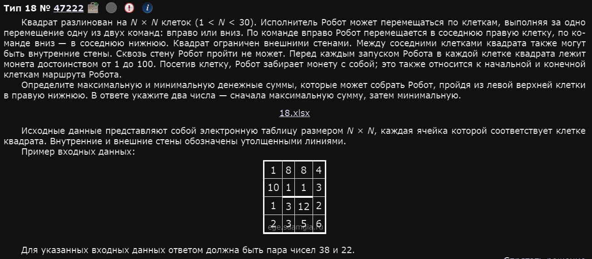
Как видите, здесь нет условия про “угловые” клетки. Т.е. теперь надо найти максимальную и минимальную суммы из левого верхнего в правый нижний, а не выбрать из нескольких. Задача, на самом деле, упрощается.